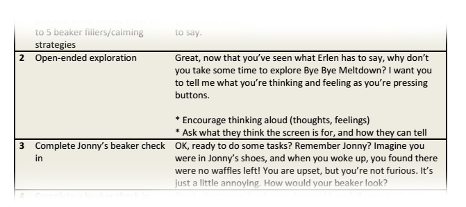

Over a weekend, I joined a group of a psychiatry resident, programmers and designers at Hacking Health for Kids @ SickKids 2014. The aim was to rapidly develop digital prototypes to address pediatric healthcare issues. Our team had the idea of helping children manage their emotions through a mobile application, adapting an existing child psychology method with beakers.
With our proactive prevention concept, we won the Pivot Award for Best Design at the end of the weekend. The following includes work that extended past the weekend when we worked with Pivot.
An environmental scan revealed the need for applications that put emotion management and tracking in the hands of children. We spoke to adults and children at the event about meltdowns and how they managed them. We sought feedback from a team member's child about their tantrums and current coping strategies. Every child handles stress differently, and we wanted to enable them to do so through a personalized app.
Playful Interactivity
We envisioned an interactive beaker to be filled or emptied on touch using a simple animation, maintaining the original
therapeutic principle driving our work. We included interactive, cute and playful elements in the app’s design in order to evoke a
positive emotional response from our intended audience.
Personalization
A profile page for the child to input their stressors and what calmed them down would help them to recognize their triggers and warning signs.
Emotional Coach
Based on one's emotion level and inputted calming strategies, the app would provide just-in-time tailored suggestions.
Target Audience
The users of the app would have been young children, aged 7-12. We also wanted to include their parents/guardians as well as their therapists/counsellors if applicable.
Our first prototype for the Hacking Health weekend aimed to showcase the main functionality of the app -- filling and emptying the beaker with "emotion" and displaying a message appropriate for the emotion level. My roles during the weekend were to conduct research and design the graphics and interface using human factors principles.
After winning the Pivot Award, we continued to develop the app with the help of Pivot Design Group.
To improve our development and marketing strategy, we identified user personas to better define use cases. These included children who could possibly be prescribed the application by a psychiatrist or have consistent access to iPads, parents and therapists.
We decided to include a friendly on-boarding process to help children set up their BBM account, introducing the face of the application, Erlen. Instead of tapping to increase/decrease the emotion level, a more intuitive sliding action was added. In later iterations, we included animated bubbles and waves and took advantage of the iPhone Gyroscope to create more interesting interactions.
(Visual design by Samantha Beekie.)
I wrote "quick and dirty" usability testing scenarios and scripts to assess the ease of use and intuitiveness of the next iteration of our app with children under 13.

We gathered more press and interest throughout the summer. We were invited by the GCI group to speak to a group of mothers/parents as well about our concept!
May-September 2014
© 2015 Allison Yan